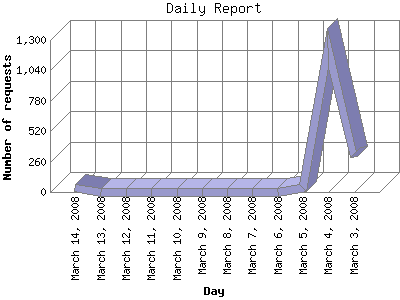

The Daily Report identifies the activity for each day within the reporting period. Remember that one page hit can result in several server requests as the images for each page are loaded.

| Day | Number of requests | Number of page requests | |
|---|---|---|---|
| 1. | March 3, 2008 | 303 | 68 |
| 2. | March 4, 2008 | 1,232 | 81 |
| 3. | March 5, 2008 | 33 | 4 |
| 4. | March 6, 2008 | 0 | 0 |
| 5. | March 7, 2008 | 0 | 0 |
| 6. | March 8, 2008 | 0 | 0 |
| 7. | March 9, 2008 | 0 | 0 |
| 8. | March 10, 2008 | 1 | 1 |
| 9. | March 11, 2008 | 1 | 1 |
| 10. | March 12, 2008 | 2 | 2 |
| 11. | March 13, 2008 | 1 | 1 |
| 12. | March 14, 2008 | 30 | 2 |
Most active day March 4, 2008 : 81 pages sent. 1,232 requests handled.
Daily average: 20 pages sent. 200 requests handled.
This report was generated on March 15, 2008 07:21.
Report time frame March 3, 2008 20:55 to March 14, 2008 23:33.
| Web statistics report produced by: analog 6.0 / Report Magic 2.21 |